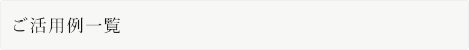
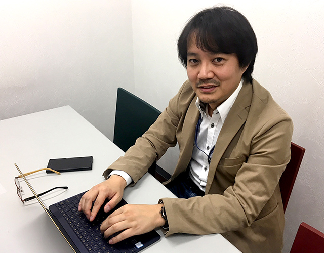
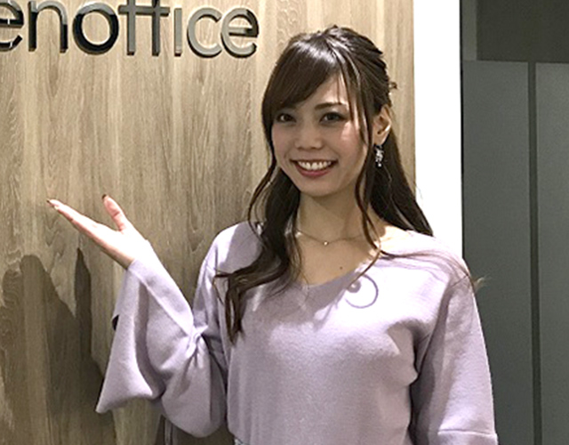
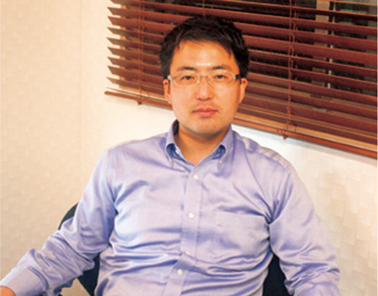
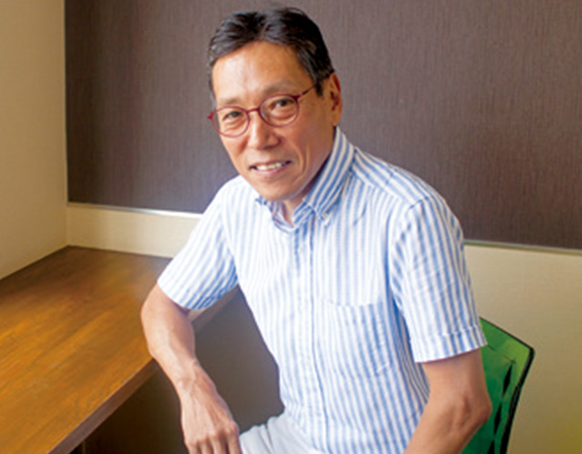
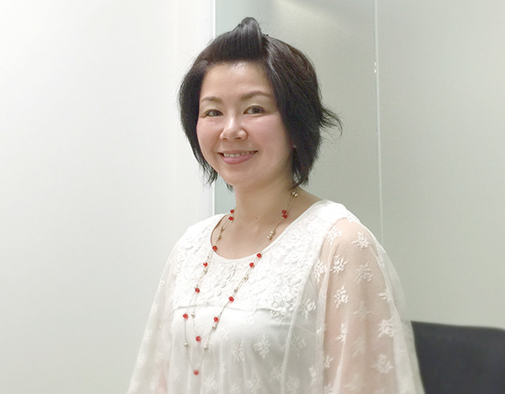
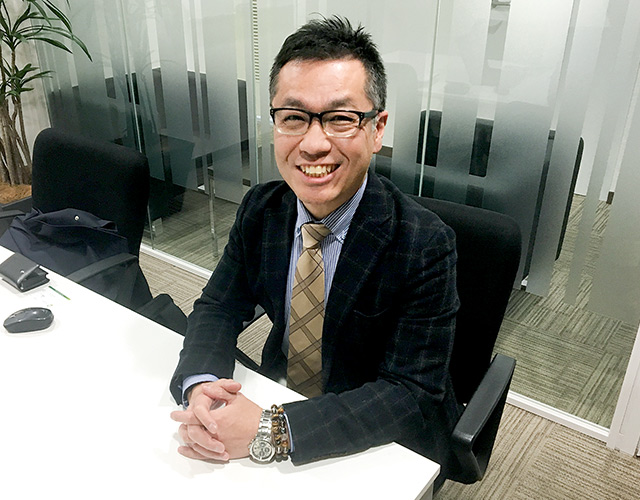
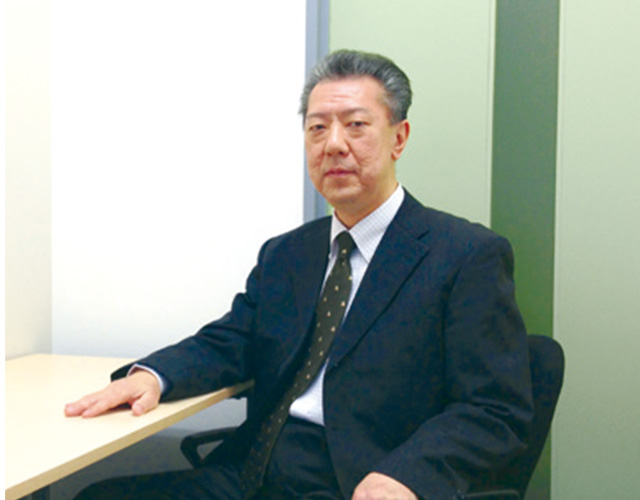

-
Openoffice 渋谷TOC
- ベイズ株式会社様は、社長の田村様が2016年の夏に起業。ITコンサルティングとソリューションを提供するビジネスを展開されています。

当初ワークスペースとしてはパソコンで作業するスペースだけあれば十分と考えていましたが、お客様の情報管理や業務に集中できる環境、業務上のアクセス効率などを考慮した「個室のオフィス」を探していました。そんな中、無駄なく使えるオープンオフィスの存在を知り、さっそく見学。将来増員の計画も明確にあった為、柔軟にオフィスの拡張が可能なオープンオフィスは、まさに打ってつけのオフィス環境でした。 IT企業が集積する渋谷の中でも宮益坂と青山通りに面したオープンオフィス渋谷TOCセンターは、「すぐに来ていただけるし、すぐに顧客に行ける」。この必要な時にスピーディーに会える環境こそがビジネスチャンスを広げていると考えています。
（田村様）
-
Openoffice 札幌南
- ママレディの代表・明石奈々様は、札幌にてSNSコンサルティングやイベントコンサルティング、モデルとしても活躍されている女性企業家です。

オープンオフィス札幌南を選んだ最大の理由は、ロケーションでした。ミーティング等でオフィスへの来客も多い為、札幌駅からすぐ近くにあり、視認性の高いロケーションであるオープンオフィス札幌南センターは、オフィスを構えるのに最適な場所であり、同時に、信頼性の高い住所を名刺に入れることができる点もポイントです。
またオフィス家具や電話、インターネット環境が整っているため利便性が高く、設備投資のコストや手間が省け、すぐにビジネスをスタートすることができました。同じように起業したばかりの会社や同業態の経営者が集まる「環境」そのものも非常に気にいりました。他の入居者様との交流や情報交換も積極的に行っています。それを通じて新しいプロジェクトもスタートしています。札幌南センターで更なる成功を掴みたいと思っています。
（明石様）
-
OpenOffice 赤坂見附
- 「営業がそのままプランニング（設計）も行う」ことによるレスポンスの早さと特殊な条件への対応力が強みのオフィス設計企画会社。特に法律事務所・弁護士事務所の開業サポートに実績が多くある。

営業が個々に客先を回るスタイルの業務のため、ノマドワーキングのベースオフィスとして利用しています。書類の作成や出力のためにオフィスに戻る感じですね。利用は3 年目で、オフィス内で2F、3F、4F と少しずつ広い部屋に移動しています。個室利用なので取引先との会話なども漏れず、情報セキュリティなどの面でも安心。オフィスに求めるものが充分備わっており、 コンパクトに活用できる点も魅力だと思っています。
（深浦様）
-
OpenOffice 南青山
- 教育用アプリ制作のパイオニアで業界では代表的な老舗企業。幼児から小学生向けのアプリ開発に関するノウハウが豊富でインターフェイスデザインからユーザー管理まで多様なニーズに応えます。

以前は近くの自宅を事務所としていましたが、オフィスを新規に構えるにあたり、保証金や内装費用などのイニシャルコストを抑えるために入居しました。在宅オペレータと協業するヘッドクオーターオフィスとして機能しています。OpenOffice 南青山の利用は1 年半ほど。利用1 年時点で4 人部屋→ 6 人部屋にアップグレードしました。人数の変動に対する拡張性や、オフィスを構え内装工事…というコストを考えると、ずっと割安です。
（長田様）
-
オープンオフィス仙台青葉通り
- 創立15年。結婚式と婚活事業を軸としています。2016年4月に婚活指南本「ずるいくらい思いのままに恋が叶う」が1万部を超えるベストセラーに。男女のコミュニケーションを体系化した異性間コミュニケーションを考案し、多くの講師とともに研修事業も行っています。他に各種イベント事業や50代以上の女性向け情報誌「ビューティーマドンナMiyagi」の発行など。女性のしあわせ応援会社として世の中を明るく照らす事業を展開しています。

今年の3月に、オープンオフィス仙台青葉通りに入居しました。
こちらに入居する以前は、会社の名前が浸透するまでのネームバリューを得るために仙台の一等地の大きなオフィスを利用していました。お客様からの評判は非常に良かったのですが、やはりそのコストは大きく、創立15周年を迎えたタイミングで、会社の名前がある程度浸透したと判断し会社機能を2カ所に分離することにしました。事務的な業務は塩釜の実家に併設していた喫茶店をオフィスに改装してそこに移転し、お客様をお迎えする営業活動用のオフィスとして仙台のオープンオフィスに入居しました。オフィスを2カ所に分離することでコストを抑えながら今までと変わらぬ営業活動を行うことができており、現在はお客様との打ち合わせやセミナーなどで会議室をフル活用させていただいています。
リージャスのオフィスはとても清潔で、いらっしゃるお客様の印象もとても良く、私たちも気持ちよく使わせていただいています。
（佐藤様）
-
オープンオフィス神保町

株式会社エクセレントサービス様は、弁護士事務所で働くパラリーガル（法律事務員）や秘書、一般事務員に特化した人材紹介会社です。2016年4月の事業開始と同時にオープンオフィス神保町センターにご入居いただきました。隣駅の九段下に、別途本社オフィスを構えており、オープンオフィス神保町センターは、そのサテライトオフィスとしてご利用いただいております。
主にご利用いただいている営業部長の吉野様によると、竹橋駅、神保町駅、大手町駅など複数の駅を利用することができ、また複数の路線を使うことができるロケーションに大きなメリットを感じ、数あるオフィスの中から、このオープンオフィス神保町センターを選択いただきました。必要最低限の施設を完備し、無駄なく効率的にオフィスを利用できる点や手ぶらで入居できる点に関してもオープンオフィスを選んだ理由としてあげて下さいました。吉野様は以前にリージャスのサービスをご利用いただいていた経緯もあり、ベンチャー企業から、ビジネスで成功されている経営者まで、様々な利用者が集まるコミュニティイベントには高い関心を持っておられます。これもまたオープンオフィスの価値のひとつであると、吉野様より、期待を込めたお言葉をいただくことができました。
エクセレントサービス様は、今後の増員やリージャスへのアップグレードも視野に入れながらオープンオフィス神保町センターにてビジネスを展開されています。
-
オープンオフィス仙台青葉通り
- 従業員30 人くらいまでの小規模企業や医療機関の経営課題を解決することに実績のあるコンサルティング会社。経営・資金調達の他に人材紹介や経理代行なども手がけています。

2013 年の8 月、青葉通オフィスのオープンと同時に入居しました。東京にも拠点があり、仙台の拠点としてリージャスをひとりで利用しています。リージャスのビジネスセンターはきちんと受付の方がいるだけでなく、各種の依頼にも応えてくれますし、対応も非常に良くて、助かっています。オフィス内も常に清掃が行き届いていて、仕事のモチベーションにもつながります。少人数の地方拠点としてリージャスを利用するのはコスト・仕事のやりやすさの両面からとてもメリットが大きいと考えています。
（吉田様）